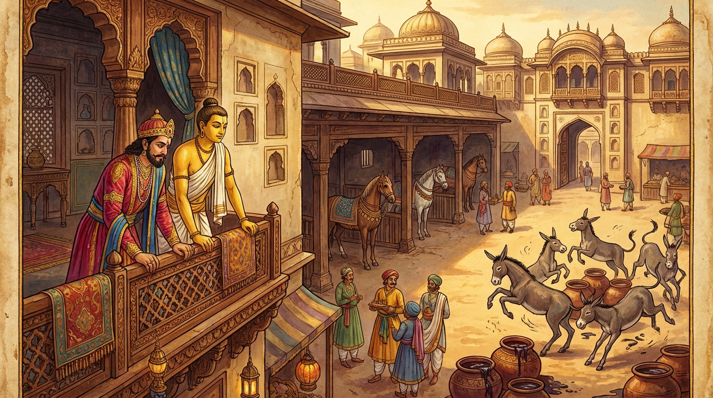

3. වාලොදක ජාතකය (183)
‘වාලොදකං අප්පරසං නිහීනං’ යන මේ දේශනාව ශාස්තෲන් වහන්සේ ජේතවනාරාමයේ වැඩවාසය කරන සමයේ පන්සියයක් විඝාසාදයන් (ඉඳුල් කන්නන්) අරබයා වදාළ සේක. සැවැත් නුවර පන්සියයක් උපාසකවරු ගිහිගෙයි බාධා අඹුදරුවන්ට පවරා දී, බුදුබණ අසමින් එක්වම හැසිරෙති. ඔවුන් අතරින් සමහරෙක් සෝවාන් වූවෝය, සමහරෙක් සකෘදාගාමී වූවෝය, සමහරෙක් අනාගාමී වූවෝය. පෘථග්ජන එකෙක්වත් නැත. මොවුන් බුදුරජාණන් වහන්සේට දානයට ආරාධනා කරන විට ඒ උපාසකවරුන් ඇතුළත් කොටම ආරාධනා කෙරෙති. ඔවුන්ට දැහැටි කූරු, මුහුණ සෝදන දිය, වස්ත්ර, සුවඳ, මල් ආදිය දෙන පන්සියයක් කුඩා උපස්ථායකයෝ (ඔවුන්ගේ) ඉඳුල් බත් කන්නන් බවට පත්ව වෙසෙති. ඔවුහු උදෑසන බත් කා නිදාගෙන, නැගිට අචිරවතී නදියට ගොස් ගං ඉවුරේ කෑකෝ ගසමින් මල්ලව පොර අල්ලති. නමුත් ඒ පන්සියයක් උපාසකවරු නිහඬව, ඝෝෂා රහිතව විවේකීව භාවනාවෙහි යෙදෙති. ශාස්තෲන් වහන්සේ ඒ ඉඳුල් කන්නන්ගේ මහත් ශබ්දය අසා, “ආනන්ද, මේ කිනම් ශබ්දයක්දැයි” තෙරුන්ගෙන් විමසා, “ස්වාමීනි, ඉඳුල් කන්නන්ගේ ශබ්දයයි” කී කල්හි, “ආනන්දය, මේ ඉඳුල් කන්නෝ දැන් පමණක් ඉඳුල් කා කෑගසන්නෝ නොවෙති, පෙරත් කෑගැසූහ. මේ උපාසකවරුද දැන් පමණක් නොව පෙරත් නිහඬව තැන්පත්ව සිටියෝ ය” යි වදාරා තෙරුන් විසින් ආරාධනා කරන ලද්දේ අතීත කථාව ගෙනහැර දැක්වූ සේක.
අතීතයේ බරණැස් නුවර බ්රහ්මදත්ත රජු රාජ්ය කරන කල්හි බෝධිසත්ත්වයෝ ඇමති කුලයේ ඉපදී වැඩිවියට පත්ව රජතුමාට අර්ථයෙන් ධර්මයෙන් අනුශාසනා කරන්නා වූහ. එකල ඒ රජතුමා “පසල් දනව්ව කිපුණේය (කැළඹුණේය)” යයි අසා පන්සියයක් සින්ධව අශ්වයන් සූදානම් කරවාගෙන සිවුරඟ සෙනඟ පිරිවරා ගොස් පසල් දනව්ව සංසිඳුවා නැවත බරණැස් නුවරටම පැමිණියේය. “සින්ධව අශ්වයෝ ක්ලාන්තව සිටිති. ඔවුනට මිදි යුෂම පානය කිරීමට දෙව්” යයි අණ කළේය. සින්ධව අශ්වයෝ සුවඳවත් පානය බී අස්හලට ගොස් තම තමන්ගේ ස්ථානවල සිටියහ. ඔවුන්ට දී ඉතිරි වූ රොඩු සහිත නීරස දියර බොහෝ විය. මිනිස්සු “මෙයට කුමක් කරමුදැයි” රජතුමාගෙන් විචාළහ. රජතුමා වතුරෙන් (මිදි රොඩු) පොඩිකර පරණ රෙදිවලින් පෙරා “යම් බූරුවෝ (කොටළුවෝ) සින්ධව අශ්වයන්ට තණකොළ ආදිය ගෙනාවාහුද, ඔවුනට දෙව්” යයි දීමට සැලැස්වීය. කොටළුවෝ ඒ කසට දියරය බී මත් වී, කෑගසමින් රජ මිදුලේ ඇවිද්දාහ. රජතුමා මහා කවුළුව විවෘත කොට රජ මිදුල දෙස බලමින් ළඟ සිටි බෝසතුන් අමතා, “මිතුර, බලව! මේ කොටළුවෝ කසට වතුර බී මත් වී කෑගසමින් උඩ පනිමින් හැසිරෙති. සින්ධව කුලයේ උපන් උතුම් අශ්වයෝ වනාහි සුවඳවත් පානය බී නිහඬව තැන්පත්ව සිටිති, උඩ නොපනිති. ඊට හේතුව කුමක්දැයි” විමසමින් පළමු ගාථාව කීවේය.

“හණ නූල් පෙරහණින් පෙරා ගත්, රසයෙන් අඩු වූ, පහත් වූ දියරය බී කොටළුවන්ට මදය (මත් ගතිය) උපදියි. එහෙත් ප්රණීත රසයෙන් යුත් මේ මිදි යුෂය පානය කොට සින්ධව අශ්වයන්ට මදය (මත් බව) නූපදියි.”
එහි වාලොදකං යනු හණ (නියඳ) නූලින් හෝ කෙඳිවලින් කළ පෙරහණින් පෙරූ (මිදි) ජලයයි. ‘වාලුදකං’ යනු ද පාඨයකි. නිහීනං යනු නීරස බැවින් නිහීන වූ දියරයයි. න සඤ්ජායති යනු සින්ධව අශ්වයන්ට මදය (මත් බව) නූපදියි. මෙයට හේතුව කුමක්දැයි විමසීය.
ඉක්බිති රජුට කරුණු පහදා දෙන බෝධිසත්ත්වයෝ දෙවන ගාථාව වදාළහ.
“ජනපතිය, පහත් ජාති ඇත්තා වූ ඒ කොටළුවා අල්ප වූ ඒ (කසට) දියරය බී මත් වෙයි. ඒ පහත් ජාතියෙන් යුක්ත වීම හේතුවෙන් ඔහු (සුළු දෙයින් ද) ප්රමත්ත වෙයි. එහෙත් ධුරය උසුලන ස්වභාව ඇති, උසස් කුලයෙහි උපන් අශ්වයා අග්ර වූ රසය පානය කොට ද මත් නොවේ.”
එහි තෙන ජනින්ද පුට්ඨො යනු ජනපතිතුමනි! උතුම් රජතුමනි, යමෙක් පහත් ජන්ම ඇත්තේ ද හෙතෙම ඒ පහත් ජන්ම ස්වභාවයෙන් ස්පර්ශ කරන ලද්දේ (සුළු දෙයින් ද) මත් වෙයි, ප්රමාදයට පත් වෙයි. ධොරය්හසීලී යනු වියගස උසුලා හැසිරෙන ගතියෙන් යුක්ත වූ, උපතින්ම සින්ධව වූ අශ්වයා ය. අග්ගරසං යනු සියල්ලට පළමුව ගත් (ප්රණීත) මිදි යුෂයයි. පිවිත්වා න මජ්ජති යනු එය පානය කොට ද මත් නොවේ.
රජතුමා බෝධිසත්ත්වයන්ගේ වචන අසා කොටළුවන් රජ මිදුලෙන් පිටතට යැවීය. හෙතෙම බෝධිසත්ත්වයන්ගේ අවවාදයෙහි පිහිටියේ දානාදී පින්කම් කොට කම් වූ පරිද්දෙන් මියපරළොව ගියේය.
ශාස්තෲන් වහන්සේ මේ ධර්ම දේශනාව ගෙනහැර දක්වා ජාතකය පූර්වාපර සන්ධි ගළපා නිමවා වදාළ සේක. “එකල පන්සියයක් කොටළුවෝ නම් දැන් මේ ඉඳුල් කෑ පිරිස වූහ. පන්සියයක් සින්ධව අශ්වයෝ නම් මේ උපාසක පිරිසයි. එකල රජතුමා නම් ආනන්ද ස්ථවිරයන්ය. නුවණැති ඇමතියා නම් මම ම වන්නෙමි”යි වදාළ සේක.
තුන්වන වූ වාලොදක ජාතක වර්ණනාවයි.